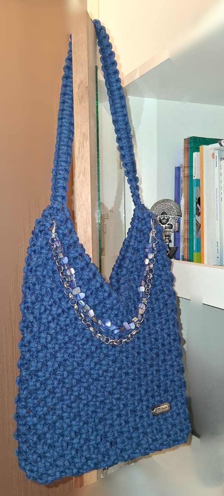
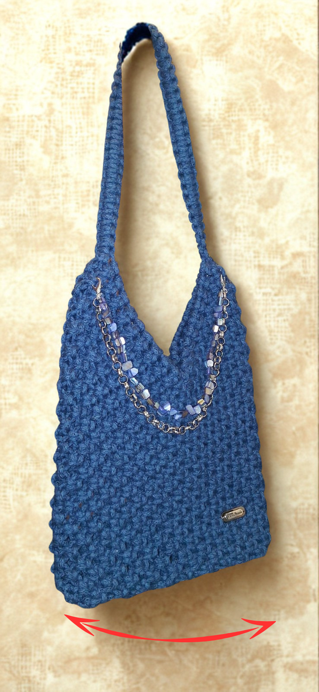
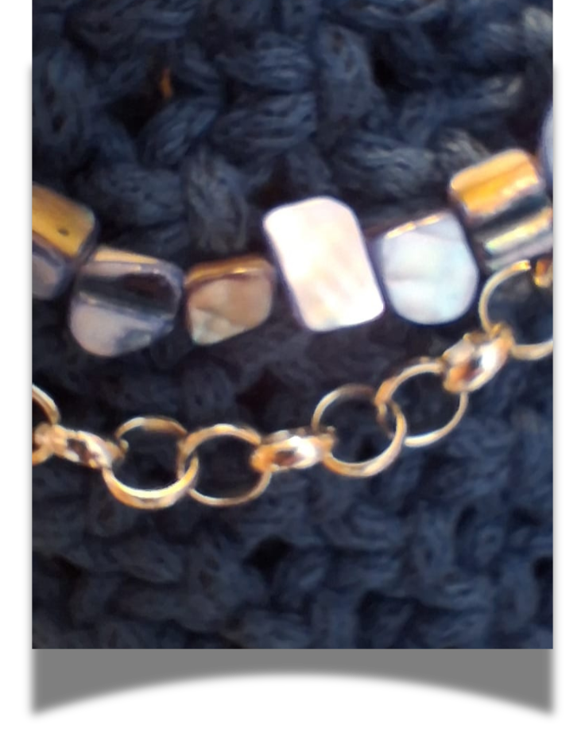
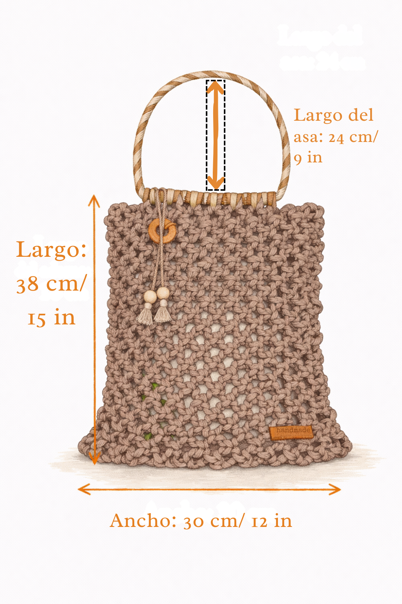
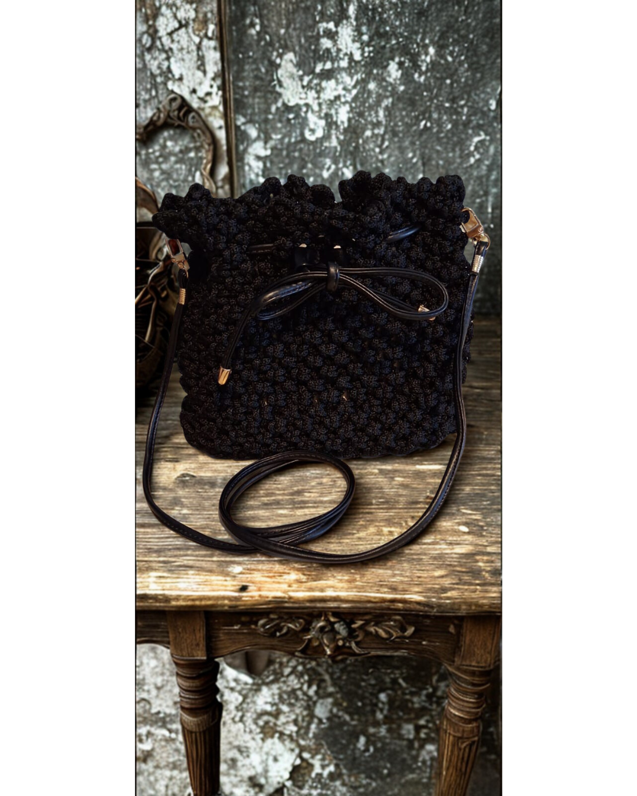
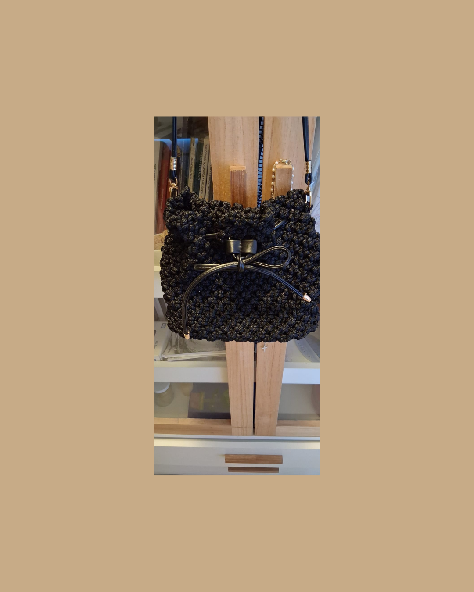
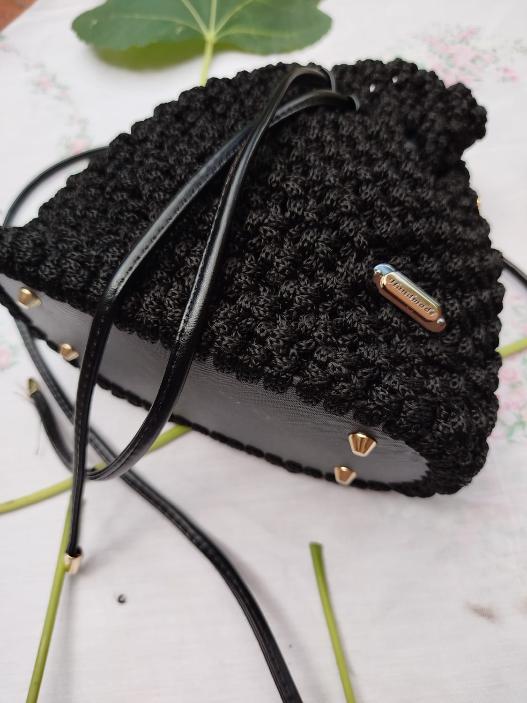

Bolsos y carteras
Handbag en Macramé Azul - Detalles en Nácar fantasía cadena plateada



¡Eleva tu look con este exclusivo handbag hecho a mano!
Tejido con cordón artesanal de algodón azul de primera calidad, este bolso es una pieza sofisticada y distintiva. Su diseño destaca por sus adornos de nácar fantasía y una cadena plateada desmontable (de 40 cm) que aportan un brillo natural y elegante.
Especificaciones Técnicas
- Modelo: Maxi
- Dimensiones: 23 cm de ancho x 26 cm de largo (aprox. 9" x 10.2"). La manija también en cordón trenzado de 50 cm de largo (aprox. 19.7")
- Materiales: Cordón artesanal de algodón azul de alta calidad de 4 mm (0,15 pulgadas), apliques de nácar fantasía y herrajes plateados.
- Origen: 100% hecho a mano por artesanas Argentinas.
Bolso Tote Macramé Hecho a Mano con Asas de Mimbre



Especificaciones Técnicas
- Modelo: Maxi
- Diseño Elegante y Seguro: A diferencia de otros modelos, este bolso presenta líneas limpias sin flecos para un look más pulido. Además, cuenta con una bolsa interna de algodón y cierre magnético, manteniendo tus pertenencias protegidas.
- Materiales: Elaborado con cordón de algodón de alta resistencia en dos tonos de marrón y asas de mimbre natural trenzado.
- Versatilidad Total: El complemento perfecto tanto para un look casual urbano como para un día relajado de playa o mercado.
- Origen: 100% hecho a mano por artesanas Argentinas.
Bolso Bandolera de Macramé Hecho a Mano - Diseño Minimalista en polipropileno negro



Especificaciones Técnicas
- Modelo: Eleva tu estilo con esta sofisticada cartera de macramé hecha a mano. Anudada meticulosamente por artesanos profesionales utilizando cordón de nylon negro de alta calidad y resistencia, este bolso presenta una estética limpia y minimalista sin flecos.
- El material aporta un brillo sutil y una excelente durabilidad para el uso diario.
- Pieza Artesanal Única: No hay dos exactamente iguales.
- Liviano y con estilo: Diseñado para brindar comodidad sin comprometer la elegancia.
- Origen: 100% hecho a mano por artesanas Argentinas.
Accesorios de moda
Descripción